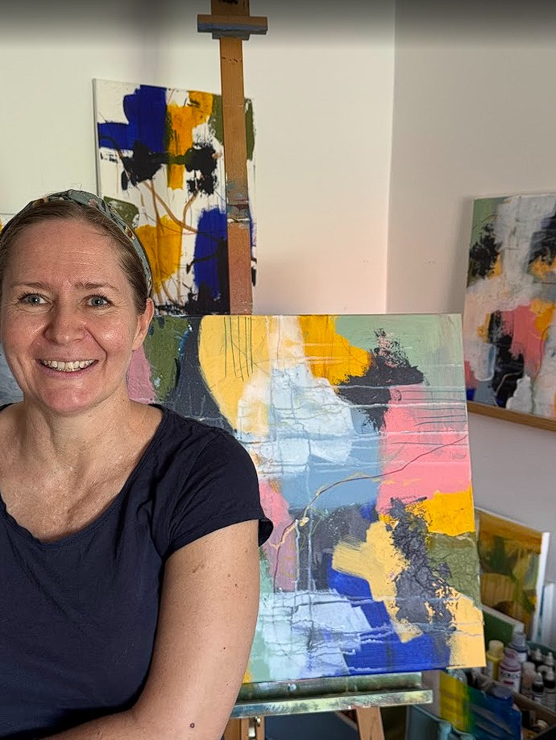

Hej, jeg er Caroline
Min passion for maleri startede som barn, hvor jeg tilbragte utallige timer med at tegne og male naturen omkring mig. Det var en måde at bevare og fortolke de øjeblikke af skønhed, som ofte går tabt i hverdagens jag.
Efter en uddannelse i kunst og design fra [Skole/Navn], har jeg udviklet min egen unikke stil, der kombinerer realistiske elementer med en impressionistisk følsomhed for lys og farve.